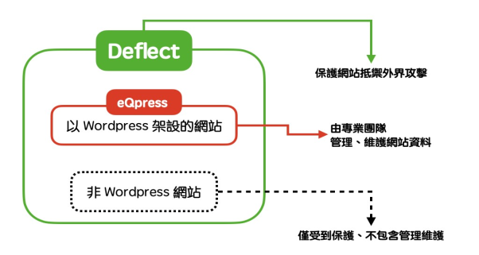

使用情境
- 你的網站有被攻擊的疑慮
- 使用 WordPress 系統架設網站，或打算使用這個系統
身為公民團體，在網路上發表的內容經常會觸犯既得利益者，進而導致惡意攻擊。
舉例而言，如果有駭客打算癱瘓你的網站，讓你的意見從網路上消失、或是減損你的社會信任，就可能會使用俗稱 DDoS 的流量超載攻擊，攻擊者在短時間內製造數以百萬計的讀取要求，讓你網站所在的伺服器不再有頻寬可以讓其他社會大眾造訪。
又或是極權國家的駭客可能想威脅使用者的安全，就會在資料傳輸的過程攔截、辨識、偷取他們的個資，使得公民團體的網站反倒成為異議人士的隱私漏洞。
WordPress 是一種架設網站的軟體，世界上有超過 40% 的網站使用這個系統。因為軟體本身免費、易上手、開放程式原始碼給所有人使用，倡議組織經常會另外租賃網址、伺服器，自行架設網路平台，用來與社會大眾溝通。甚至可以安裝各式外掛，提供使用者捐款、訂閱、購買義賣品的功能。雖然 WordPress 彈性大且讓使用者有自主權，不會受限於網站架設廠商，但自行架設的 WordPress 如果沒有專業技術團隊維護，可能會產生更多安全漏洞。
有鑒於倡議組織受到攻擊的風險高、又經常缺乏技術團隊，因此 eQpress 還包含專業的維護服務，協助組織管理 WordPress 網站。即使公民團體沒有專門的網站技術團隊，也不用擔心網站因為沒有更新、外掛功能（plug-in）有安全漏洞而遭致攻擊或損失。
如果你的狀況符合上述第一點情境：自己擁有網站，但不是 Wordpress 系統，可以只申請 Deflect，讓 Deflect 協助你的網站抵禦攻擊。
若再符合第二點，就能申請將網站交給 eQpress 平台維護，由專業技術團隊來進行管理，使你的網站可以在攻擊中屹立不搖、繼續它的倡議工作，並且加密所有傳輸資料的過程，確保使用者的隱私及安全。此外，除了同時有 Deflect 的保護，還可以有以下額外功能：
- 防止病毒
- 遠端備份
- 提供佈景 (theme) 及外掛 (plugin) 之編輯介面供客戶自行操作
- 客服技術支援
- Wordpress 及 Deflect 的更多細部選項及服務
當你經由前述說明、確認自己需要申請這些服務，以下的段落將繼續說明這些服務的使用方式以及申請流程。如果你不確定相關的技術資訊代表什麼，可以在組織內協調適合的人選，或尋找顧問來幫助你進行以下的內容。
使用方式
當你的組織需要架設網站，又同時考量到自己可能是駭客針對的攻擊目標時，就可以選擇結合 WordPress 這項工具與 eQPress 的服務搭配。
或，你的組織並不使用 Wordpress 架設網站，只想使用 Deflect 的防護功能保護你的網站，這個情況請直接跳到申請流程的段落繼續閱讀。
WordPress 是一套開放原始程式碼的網站系統，使用者可以自訂外觀與內容，並增加各式外掛功能。經由 WordPress 架設網站並搭配 eQpress 的服務，就如同租辦公室開始倡議工作一樣，大略可以分三個大步驟：
- 決定並租用網址
- 租用適合的空間
- 網頁外觀設計
決定網址的名稱，例如 https://你的網站名字.tw 。令所有人都能記住並找到你的網站在哪。當你想好了之後，就要去找租賃網域的服務商，例如 Gandi 這樣的服務商像購物平台一樣整合各類網址供租借選擇，將你的網址登記在數位世界，不同結尾的網址有不同年費價格全部一覽無遺。
如同現實中的辦公室，有地址之外，還得有一個具體的建築空間。在數位世界則是挑選網站資料要存放的伺服器主機在哪，這就形同建築的大小、規格都會影響訪客的人數、行為。eQpress 的任務就是在此擔任伺服器主機的位置，並提供強健而且彈性的保護空間，使任何想要造訪網站的訪客，都必須經由 eQpress 的伺服器，再進入網站本身。只要符合前述的申請資格，就可以按照以下的流程以免費使用 eQpress。
這部分也是免費的，你可以按照你的倡議需要，使用 WordPress 本身就具備的軟體系統來決定網站外觀、功能、內容。注意，網頁的設計工作不在 eQpress 的保障範圍，需要自行挑選或設計好看的網頁。當然，你也可以外包給專業的網頁設計師，再將他的成果搬移到 eQpress 當中。
申請/取得流程
eQpress 是一項基於 Deflect 的免費服務，不用在你的電腦下載或安裝。經由線上申請流程，就可以取得 Deflect 的網站保護以及 eQpress 的網站維護服務。只要你的組織符合以下條件：
- 捍衛人權；並且是一個民間社會組織； 例如製作獨立媒體、或支持從事人權工作的人。
- 工作的內容不違反《世界人權宣言》中規定的原則。
- 工作的過程不宣揚仇恨言論或鼓勵歧視。
- 同意他們的 使用條款並接受隱私規範 。
若你符合並同意他們的規範，便可以到 https://deflect.ca/non-profits/進行註冊並著手申請。要注意，申請之前就要先準備好：
- 網站的網址（網域及伺服器的 IP）、聯絡人的 e-mail。
- 如果你不需要使用 eQpress 保管你的 Wordpress 網站，可以在這步驟只申請 Deflect 的網站保護功能即可。
在這個流程裡，有任何申請問題都可以聯繫他們的客服人員。
在申請過後，就可以在 Deflect Dashboard 內有一個選擇介面（ Hosting tab ）決定要使用的 eQPress 方案，有三種類型：
- 建立空白的 WordPress 網站
- 建立空白的 WordPress 並預載指定主題
- 遷移已架設的 WordPress 網站到 eQpress 平台裏面
如果你未曾架設，或想要重新開始一個網站，那就可以選擇這個方案，並且開始經由 WordPress 的管理工具設計網站內容。如果不知道如何開始，可以搜尋「WordPress」、「佈景主題」等關鍵字的組合。因為市面上已經有非常多的教學文章詳細交代網站設計的流程，本文不再贅述。
如果你已經有選定的、設計完成的網站佈景主題，那就可以使這個方案，並且載入你設計好的網站。
如果你之前已經在其它地方使用 WordPress 架設網站，並且想原封不動搬遷既有的網站內容，就需要聯絡之前協助你管理網站的伺服器供應商，請他們提供 WordPress 的原始檔案、程式碼及資料庫備份檔，再交給 eQpress 的技術人員。
技術支援/求救方法
當你註冊 Deflect 的帳號之後，即使你不是資訊科技相關的技術人員，或不熟悉 WordPress 的軟體、租賃網址的過程，那都沒關係。遇到使用流程上的疑問，或是網站經營期間有其他問題，都可以到 https://support.deflect.ca/登入你的帳號，並且詢問他們的客服、請求協助。還沒註冊帳號的話，也可以填寫他們的官網表格：https://deflect.ca/contact/讓客服人員協助你。
eQualitie 團隊就是為了協助全世界的公民團體適應、強化數位世界的生存能力而生，只要你的組織工作目標是為了促進公平、自由、人權，大家都會一起來幫忙。 如果對本文的介紹有任何疑義，也可以聯繫 hi@ocf.tw 開放文化基金會。
結語
在數位時代，在第一線工作的公民團體，經常會需要架設網站進行倡議。但具有敵意的政府資助駭客，能夠輕易對自行架設的網站做出各式攻擊、入侵。 因此總部在加拿大的 eQualitie 團隊提供公民團體可以免費申請的保護措施。
只要是一個公民團體，並且以捍衛人權為目標，並同意他們的 使用條款並接受隱私規範 。公民團體就能申請後，將自己的網站交由他們的服務保護。